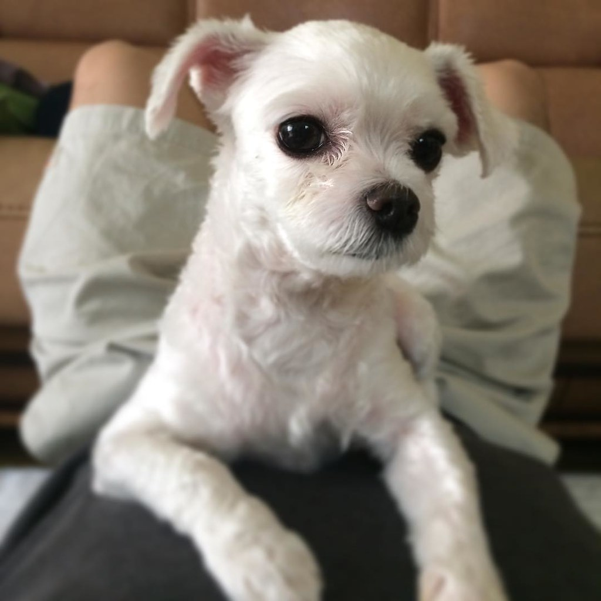

css Background
css의 background 속성을 알아보자


image를 포함하는 노드 개체 img 태그
- src : 이미지 경로
- alt : 이미지를 찾지 못할 시 대체되는 텍스트
- width height : style.width style.height에 적용되는 px 길이로 둘다 적용하면 노드 개체의 이미지 비율이 맞지 않게 조절된다.
절대경로와 상대경로
- "/경로/파일" :
- "파일"=="./파일" :
- "../파일" :
- 상대경로가 복잡해 지면 꼭 절대경로를 사용한다.
- navigation은 무조건 절대경로를 사용한다.
강아지 사진입니다.
말티즈 사진입니다.
width: 100% ,height auto
a
b
c
d
background-image
- background-image: url("경로") : 해당 노드에 image가 배경으로 추가
- background-image: url("경로"),url("경로"),url("경로") .. :복수의 이미지 추가
- background-image가 추가된 해당 노드에 부피(가로X세로)가 존재하지 않으면 image가 출력되지 않는다.
background-repeat
- repeat(default) : repeat repeat
- repeat-x : x축 반복
- repeat-y : y축 반복
- no-repeat : 반복하지 않음
- space :여백 있는 반복
- round :공간을 채우는 반복
background-position
배경의 위치를 조정하는 속성(no-repeat)
- 가로(right,left) 세로(bottom,top):center, px, % default(left top)
- bottom == center bottom
- left == left center
- 50px == 50px 50px or 100% == 100% 100% or center == 50% 50%
background-size
- 가로 세로: 수치(px,%,vw,em...) auto
- 가로 auto or 세로 auto : 비율에 맞춰서 수치가 바뀌는 값
- auto auto (default): 기존 크기
- cover : 이미지 비율보다 가로가 크면 가로를 100%, 이미지 비율보다 세로가 크면 세로를 100%로 자유롭게 변경하며 배경의 커버가 되도록 한다.(position:center)
- contain : 이미지가 짤리지 않도록 최대 크기를 유지
background-attachment
- scroll: document를 기준으로 배경을 위치함
- fixed: view를 기준으로 배경을 위치함(scroll을 따라다님)
- local: node를 기준으로 배경을 위치
background-origin(box-sizing 비슷)
- padding-box(default)
- border-box
- content-box
background-blend-mode
이미지가 배경과 혼합될 때 어떻게 표현될지 결정
01 번째 줄
02 번째 줄
03 번째 줄
04 번째 줄
05 번째 줄
06 번째 줄
07 번째 줄
08 번째 줄
09 번째 줄
10 번째 줄
11 번째 줄
12 번째 줄
13 번째 줄
14 번째 줄
15 번째 줄
16 번째 줄
17 번째 줄
18 번째 줄
19 번째 줄
20 번째 줄
21 번째 줄
22 번째 줄
23 번째 줄
24 번째 줄
25 번째 줄
26 번째 줄
27 번째 줄
28 번째 줄
29 번째 줄
30 번째 줄
31 번째 줄
32 번째 줄
33 번째 줄
34 번째 줄
35 번째 줄
36 번째 줄
37 번째 줄
38 번째 줄
39 번째 줄
40 번째 줄
41 번째 줄
42 번째 줄
43 번째 줄
44 번째 줄
45 번째 줄
46 번째 줄
47 번째 줄
48 번째 줄
49 번째 줄
50 번째 줄
51 번째 줄
52 번째 줄
53 번째 줄
54 번째 줄
55 번째 줄
56 번째 줄
57 번째 줄
58 번째 줄
59 번째 줄
60 번째 줄
61 번째 줄
62 번째 줄
63 번째 줄
64 번째 줄
65 번째 줄
66 번째 줄
67 번째 줄
68 번째 줄
69 번째 줄
70 번째 줄
71 번째 줄
72 번째 줄
73 번째 줄
74 번째 줄
75 번째 줄
76 번째 줄
77 번째 줄
78 번째 줄
79 번째 줄
80 번째 줄
81 번째 줄
82 번째 줄
83 번째 줄
84 번째 줄
85 번째 줄
86 번째 줄
87 번째 줄
88 번째 줄
89 번째 줄
90 번째 줄
91 번째 줄
92 번째 줄
93 번째 줄
94 번째 줄
95 번째 줄
96 번째 줄
97 번째 줄
98 번째 줄
99 번째 줄
100 번째 줄
background-color
노드 개체에 색을 지정
background: linear-gradient() : 막대형 그라데이션
background: radial-gradient() : 방사형 그라데이션
background-clip
노드 개체에 색과 그라데이션이 표현되는 영역(content,padding,border-box(default))
filter
노드 개체에 그래픽(흐림,흑백,밝게..) 효과를 적용
backdrop-filter
노드 개체 뒤 노드의 그래픽 효과를 적용(반투명효과)